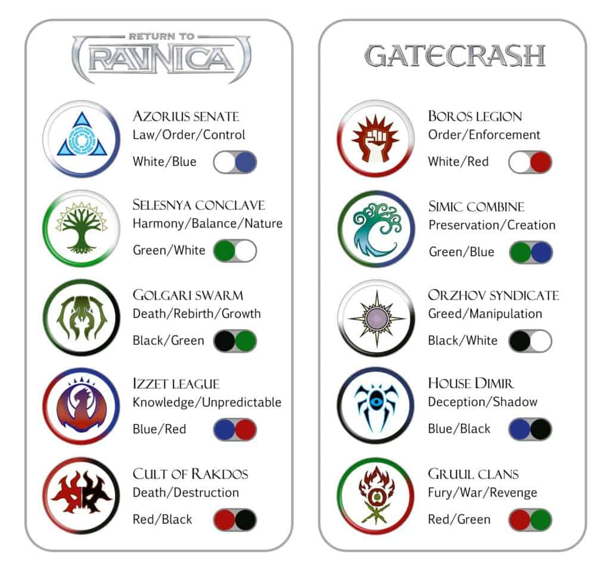
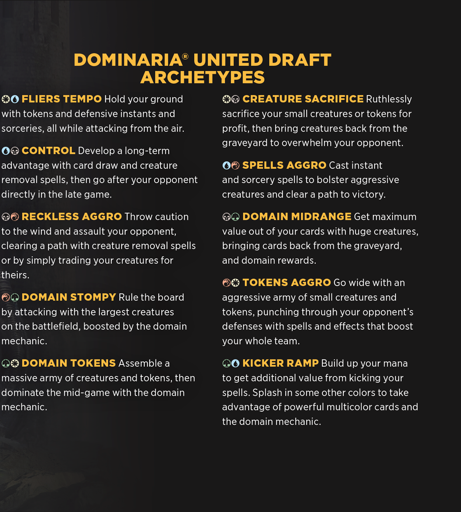
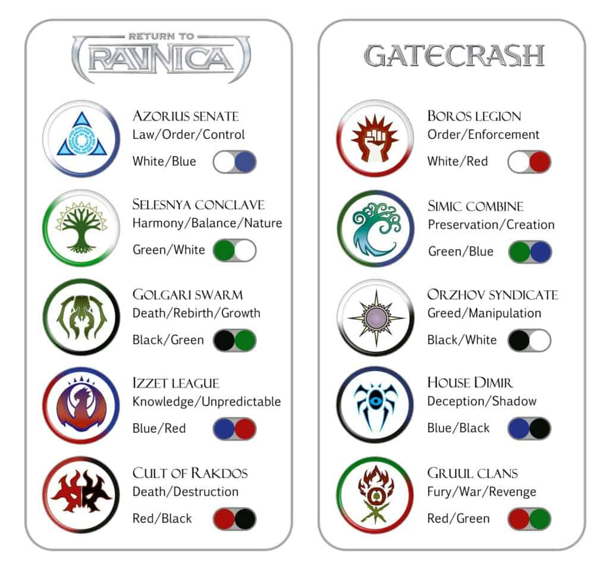
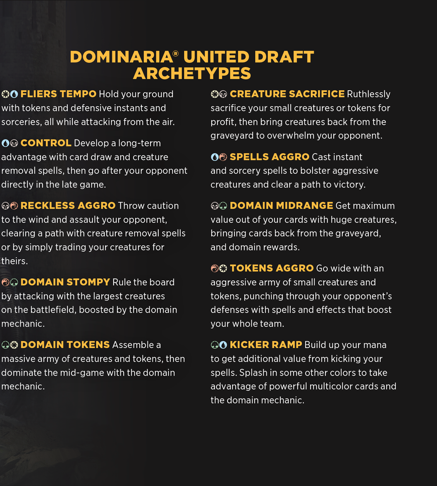

The Colors of Magic: The Gathering
There are five colors, sequenced white, blue, black, red, and green; this arrangement is called the "color pie" or "color wheel". Devised by Magic creator Richard Garfield, the color system is one of the game's most fundamental and iconic elements. It gives the game diversity in its cards, effects, and play styles, while preventing any one deck from having every tool in the game.
- Each of the five colors represents a set of beliefs and principles, giving identity to Magic's characters and organizations. A color's philosophy explains how it sees the world, what objectives it hopes to realize, and what resources and tactics a color has at its disposal.
- This dictates which card types and abilities thematically fit within a color, allowing the game's flavor to connect with and even define its functionality.The basic concepts related to each color are:
-
- Red: Freedom, emotion, action, impulse, destruction
- Blue: Knowledge, deceit, caution, deliberation, perfection
- Green: Nature, wildlife, connection, spirituality, tradition
- White: Peace, law, structure, selflessness, equality
- Black: Power, self-interest, death, sacrifice, uninhibitedness
 


